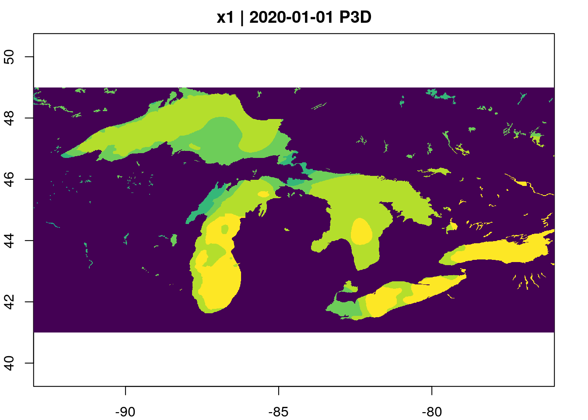

earthdatalogin::edl_netrc()This tutorial demonstrates how begin to generalize the pattern introduced in the introductory example to work with other data sources, in particular, with NASA EarthData.
NASA recently announced completion of the transfer of some 59 petabytes of data to the Amazon cloud – a core component of NASA’s Transformation to Open Science (TOPS) mission. Researchers are frequently told that to take advantage of such “cloud data” they will need to pay (or find a grant or other program to pay) for cloud computing resources. This approach is sometimes describes as “send the compute to the data”. While this narrative is no doubt beneficial to Amazon Inc, it exacerbates inequity and is often misleading. The purpose of having data in a cloud storage platform is not just to make it faster to access that data on rented cloud computing platforms. The high bandwith and high disk speeds provided by these systems can be just as powerful when you provide your own compute. Consistent with NASA’s vision, this means that high-performance access is free
NASA Earth science data have been freely openly and available to all users since EOSDIS became operational in 1994. Under NASA’s full and open data policy, all NASA mission data (along with the algorithms, metadata, and documentation associated with these data) must be freely available to the public. This means that anyone, anywhere in the world, can access the more than 59 PB of NASA Earth science data without restriction
All we need is software that can treat the cloud storage as if it were local storage: a virtual filesystem. The ability to do this – the HTTP range request standard – has been around for over two decades and is widely implemented in open source software. Unfortunately, many users and workflows are stuck in an old model that assumes individual files must always be downloaded first.
To make this work with NASA EarthData however, we have one additional challenge involving the problem of authentication. NASA offers several different mechanisms, including (1) netrc authentication, (2) token-based authentication, and (3) S3 credentials, but only the first of these works equally well from locations both inside and outside of AWS-based compute, so there really is very little reason to learn the other two.
The earthdatalogin package in R or the earthaccess package in Python handle the authentication. The R package sets up authentication behind the scenes using environmental variables.
(A default login is supplied though users are encouraged to register for their own individual accounts.) Once this is in place, EarthData’s protected URLs can be used like any other. For instance, after authenticating, we can read this NASA harmonized LandSat-Sentinel2 tif whether we are running locally:
terra::rast("https://data.lpdaac.earthdatacloud.nasa.gov/lp-prod-protected/HLSL30.020/HLS.L30.T56JKT.2023246T235950.v2.0/HLS.L30.T56JKT.2023246T235950.v2.0.SAA.tif",
vsi=TRUE)class : SpatRaster
dimensions : 3660, 3660, 1 (nrow, ncol, nlyr)
resolution : 30, 30 (x, y)
extent : 199980, 309780, 7190200, 7300000 (xmin, xmax, ymin, ymax)
coord. ref. : WGS 84 / UTM zone 56N (EPSG:32656)
source : HLS.L30.T56JKT.2023246T235950.v2.0.SAA.tif
name : HLS.L30.T56JKT.2023246T235950.v2.0.SAA An important aspect about this approach is that it does not require any custom wrappers or specialized functions to access data. Most R packages that work with spatial data, including terra, sf, stars and others, do so through the use of GDAL for parsing spatial data formats. This means that they all support the GDAL Virtual Filesystem for cloud-native reads out of the box. earthdatalogin() takes advantage of this by setting authentication credentials as GDAL environmental variable configuration, allowing these existing to seamlessly read NASA data. No need to learn any additional access functions.
Working with STAC & gdalcubes
library(earthdatalogin)
library(rstac)
library(gdalcubes)earthdatalogin also includes optional configuration settings for GDAL which can improve performance of cloud-based data access. Set the GDAL environmental variables using gdal_cloud_config(). An additional helper function exposes the usual GDAL environmental variable to the gdalcubes R package.
edl_netrc() # Authenticate
gdal_cloud_config() # Optimize GDAL for cloud
with_gdalcubes() # Export settings to gdalcubes package
gdalcubes_options(parallel = TRUE)NASA provides their own search system. NASA also provides a STAC-based search (see below), which allows us to use the standard syntax we have already seen. However, NASA’s STAC API is significantly slower and more prone to server errors than the STAC APIs provided by Element84, Microsoft Planetary Computer, and others.
Here, we use NASA’s own search protocol, which is less general, but gives us a chance to illustrate the use of gdalcubes using arbitrary URL lists when no STAC catalog is available. We search a handful of dates for illustrative purposes, but this approach can easily scale to larger lists without needing additional RAM or disk space.
start <- "2020-01-01"
end <- "2020-01-03"
urls <- edl_search(short_name = "MUR-JPL-L4-GLOB-v4.1",
temporal = c(start, end))These netcdf files lack appropriate metadata (projection, extent) that GDAL expects. We can provide this manually using the GDAL VRT mechanism:
vrt <- function(url) {
prefix <- "vrt://NETCDF:/vsicurl/"
suffix <- ":analysed_sst?a_srs=OGC:CRS84&a_ullr=-180,90,180,-90"
paste0(prefix, url, suffix)
}
# date associated with each file
url_dates <- as.Date(gsub(".*(\\d{8})\\d{6}.*", "\\1", urls), format="%Y%m%d")Because each file in this list of URLs has the same spatial extent, resolution, and projection, we can now manually construct our space-time data cube from these netcdf slices:
data_gd <- gdalcubes::stack_cube(vrt(urls), datetime_values = url_dates)We use gdalcubes to crop each file
extent = list(left=-93, right=-76, bottom=41, top=49,
t0=start, t1=end)
bench::bench_time({
data_gd |>
gdalcubes::crop(extent) |>
aggregate_time(dt="P3D", method="mean") |>
plot(col = viridisLite::viridis(10))
})
process real
2.29s 27.34s Search via STAC
The STAC Catalog search system we illustrated in the introductory example is a widely used standard. This means that we can use the same packages and same code we have already learned to access entirely different geospatial data products prepared by an entirely different provider. In this example, we will illustrate searching NASA’s EarthData catalog using the STAC interface. We can also browse the collection of NASA Earthdata STAC Catalogs in a web browser. (NOTE: Unfortunately, at this time, NASA’s implementation of the STAC standard is incomplete. The web browser only shows the first 10 entries under any heading, despite the NASA STAC API actually having the complete records. Also, NASA’s STAC service is considerably slower than those provided by Element84 or Microsoft Planetary Computer.)
items <- stac("https://cmr.earthdata.nasa.gov/stac/POCLOUD") |>
stac_search(collections = "MUR-JPL-L4-GLOB-v4.1",
datetime = paste(start,end, sep = "/")) |>
post_request() |>
items_fetch()
items###STACItemCollection
- matched feature(s): 3
- features (3 item(s) / 0 not fetched):
- 20200101090000-JPL-L4_GHRSST-SSTfnd-MUR-GLOB-v02.0-fv04.1
- 20200102090000-JPL-L4_GHRSST-SSTfnd-MUR-GLOB-v02.0-fv04.1
- 20200103090000-JPL-L4_GHRSST-SSTfnd-MUR-GLOB-v02.0-fv04.1
- assets: data, metadata, opendap
- item's fields:
assets, bbox, collection, geometry, id, links, properties, stac_extensions, stac_version, type